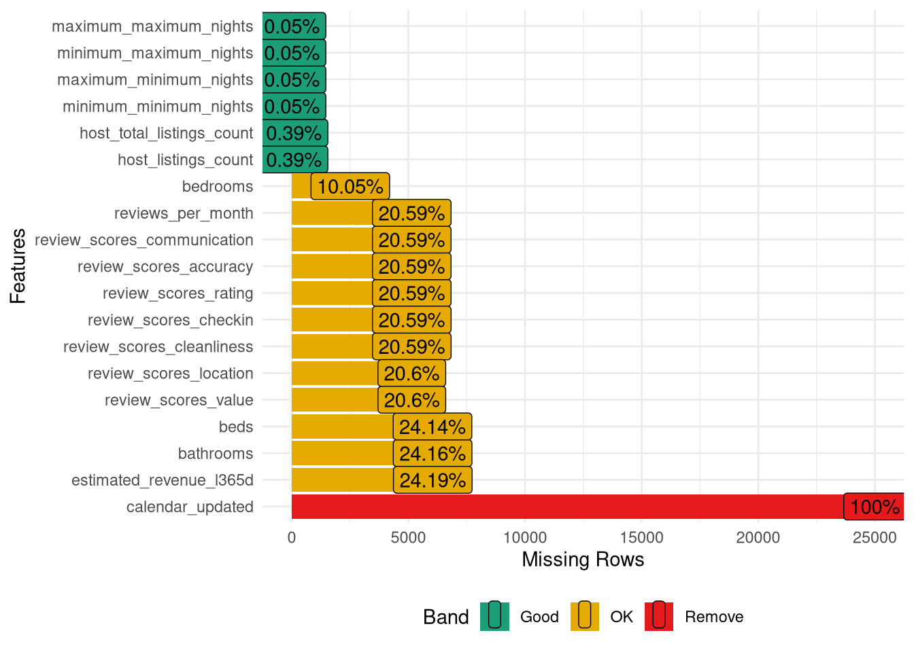
Multivariate Analysis: First Assignment
Preprocessing
For this assignment we have decided to work with data from the Inside Airbnb database. It was created originally by the activist Murray Cox in 2015 to show the impact of Airbnb in local communities, but nowadays it serves as a database for Airbnb in many cities in the world. Among them, we have selected Madrid, since it is a familiar place to all of the components of the group. Information was last updated on September the 14th 2025, so it is quite up to date.
The data “as is” contains 25000 observations of 79 variables, including categorical, quantitative, and binary data. Moreover, one of the variables (called amenities), holds a list of amenities available in the rental unit (such as WiFi, elevator, kitchen, etc.), which can be thought as binary variables as well (the rental unit has this amenity or not). The assignment required to use around 10-15 variables and around 100-1000 observations, so we have decided to:
- Remove variables with high presence of NA values.
- Remove every row containing any NA value (since we have so many there are enough left).
- Decompose the
amenitiesvariable into binary columns. - Select the most interesting variables out of the remaining (so we can end up close to 15).
- Sample the remaining observations until we keep 1000 of them.
After selection, we remain with 15 variables, which can be seen in Table 1.
| Variable | Type | Description |
|---|---|---|
accommodates |
Quantitative | The maximum capacity of the listing |
air_conditioning |
Binary | Is there an air conditioning in the listing? |
bathrooms |
Quantitative | The number of bathrooms in the listing |
bedrooms |
Quantitative | The number of bedrooms |
elevator |
Binary | Is there an elevator in the listing? |
estimated_occupancy_l365d |
Quantitative | Estimated number of days that the listing will be rented per year |
heating |
Binary | Is there a heating system in the listing? |
host_age_years |
Quantitative | Time (in years) that the owner of the listing has been with Airbnb |
host_total_listings_count |
Quantitative | The number of listings the host has (per Airbnb unknown calculations) |
minimum_nights |
Quantitative | Minimum number of night stay for the listing |
neighborhood_group_cleansed |
Categorical | The neighborhood group as defined by public digital shapefiles |
number_of_reviews |
Quantitative | The number of reviews the listing has |
price |
Quantitative | Daily price in local currency |
review_scores_value |
Quantitative | Average of the reviews of the listing |
room_type |
Categorical | { Entire place, Private room, Shared room, Entire place } |
Selection criteria
Missing variables
Variables with a high percentage of missing values can be safely discarded. Let us take a look at Figure 1.
We can see that the calendar_updated variable is almost entirely missing, so we discard it. Among the remaining variables with missing values, we can see that the worst case has around 25% values missing. If rows with missing variables do not match between them (in other words, if they are disjoint sets) we could run into trouble by discarding rows with any NA.
A better approach than removing the rows blindly is perhaps to first choose the variables we want to keep, which will minimize the possibility of finding one. In order to do so, we first need to decompose the amenities, as we see in the following section.
Frequent amenities
Among the possible amenities we have basic commodities that the listing is expected to have, such as WiFi or a kitchen, and others that are additions with less relevance, such as a dryer or a dedicated workspace. It is clear that the latter will have little impact on customers’ decisions, whereas the former have a huge impact on the listing if they are missing. The criterion we have followed to select the amenities is to keep those that appear in more than 10% of the data, which turned to be 20 of them. These are 20 new variables to consider with binary values (representing if it is present in the listing or not).
Selecting interesting variables
Since the number of variables still present in the data was too big (98), we decided to keep those that seemed the most interesting and relevant. We have already seen in Table 1 the ones we chose, where we tried to respect the original requirement of having at least two binary variables, two multiclass categoricals, and six quantitatives.
Removing rows with NA
Once we have our variables selected, we remove the rows with any missing values, which reduces the number of them from 25000 to 14970 (a 59.88% reduction).
Sampling the remaining rows
For the remaining rows, we wanted to make sure not to bias the sample by choosing too many samples from a single neighborhood, since the Centro neighborhood constitutes half of the data (6704 rows out of the $$15000 remaining). To this end, we sample by maintaining the original proportion of listings per neighborhood. In the end, we remain with 1000 variables following said directive.
Some comments about the remaining variables:
- Neighbourhood representation is preserved. The most important one is ‘Centro’, as we mentioned before, with a representation of 45%.
- The most common type of listing is an entire apartment (75%), followed by a private room in someone’s house (24%).
- Listings typically have only one bedroom (62%), and sometimes two (23%).
- The average
priceof listings per night is 112 €, and the average occupation per year is 96 days.
Data exploration
Let us take a look now to the quantitative data by using histograms. Among the available, we have chosen to take a look into those shown in Figure 2.
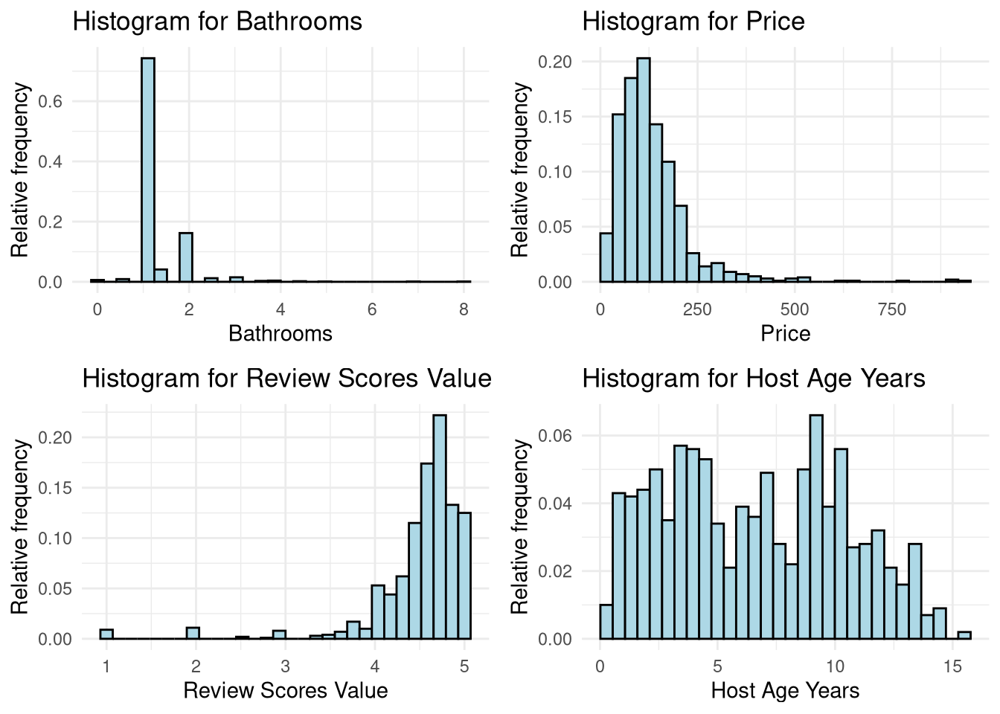
- Interestingly, we see that the bathrooms variable is not an integer but continuous. The reasonable explanation for this is that toilets (without a shower) are considered “half bathrooms”. We can see, nevertheless, that listings typically have only one bathroom, sometimes two, and less frequently “one and a half”.
- The price histogram is right-skewed because of some high-priced outliers. Average price, as we saw in the univariate table, is 112 € per night, with a standard deviation of \(\pm 91.25\), which checks with what can be seen in the histogram.
- The review scores are left-skewed, which is to be expected. These types of situations arise frequently in review systems, since value
4is considered as a good experience instead of 3 as we might naively think. The latter is usually considered as a “bad review”. - The number of years hosts have been with Airbnb does not follow a specific trend. Moreover, data is distributed along the 0-15 years, with the latter having slightly less representation.
A very reasonable question to have is if the accommodates affects the price, as one could expect. In Figure 3 we can see that this is the case.
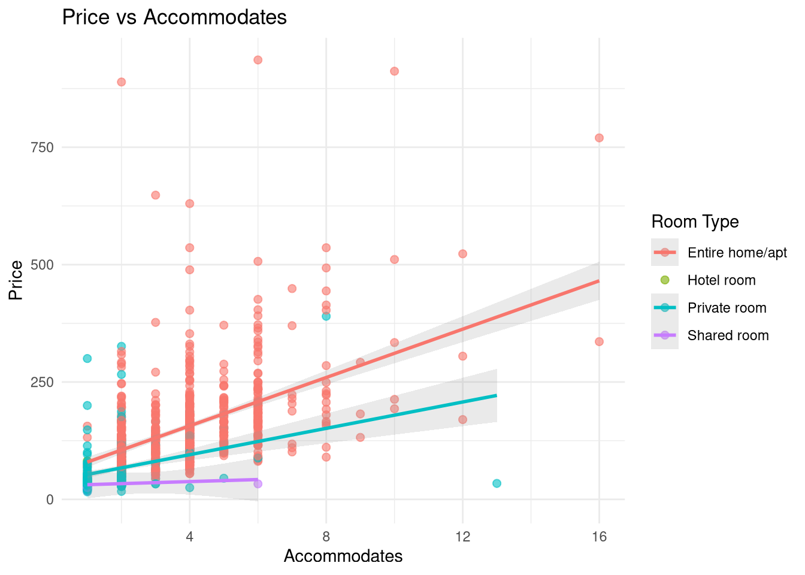
We can see that the tendency for prices is to increase more aggressively for entire apartments than for private rooms. Shared rooms, on the other hand, do not increase the price by the number of accommodates, most likely because there may be many beds in a single room, so there is little difference in having more or less accommodates. Figure 4 shows, moreover, that shared rooms are rare among the listings, dominated by entire apartments.
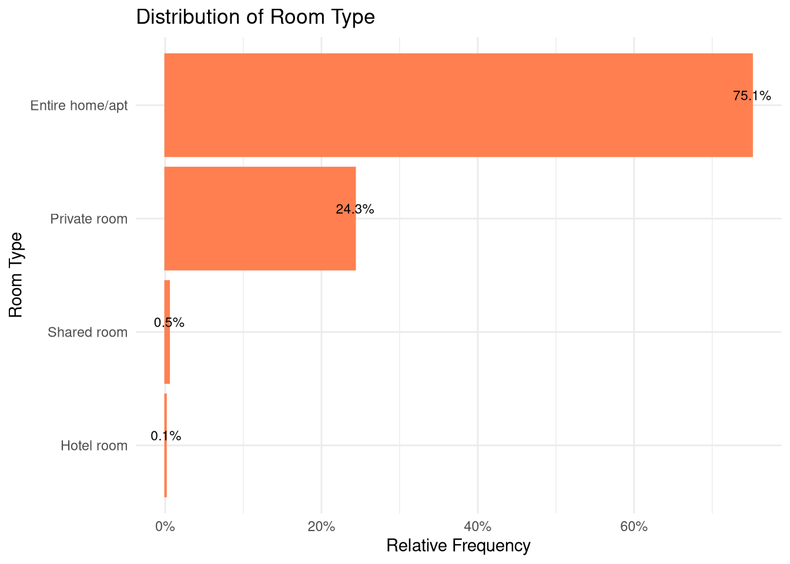
In fact, we can use a crosstab-heatmap to show just how clustered is the data around the city center, which is why we decided to respect the original proportions of listings per neighborhood. Figure 5 contains the result.
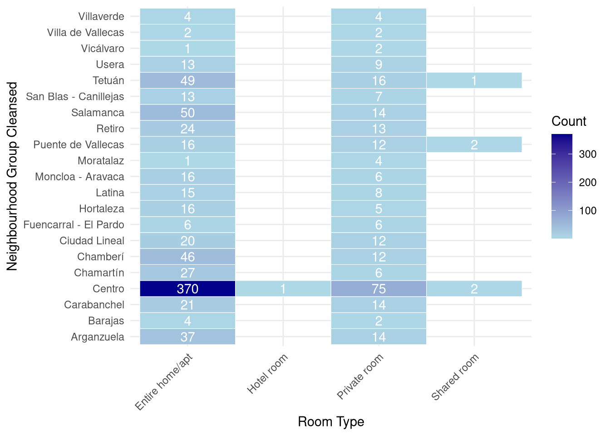
Note, as well, that more than 33% of the data comes from entire apartments in just the city center of Madrid. Let us be now more specific about the distribution of prices based on the type of listing. Figure 6 shows it.
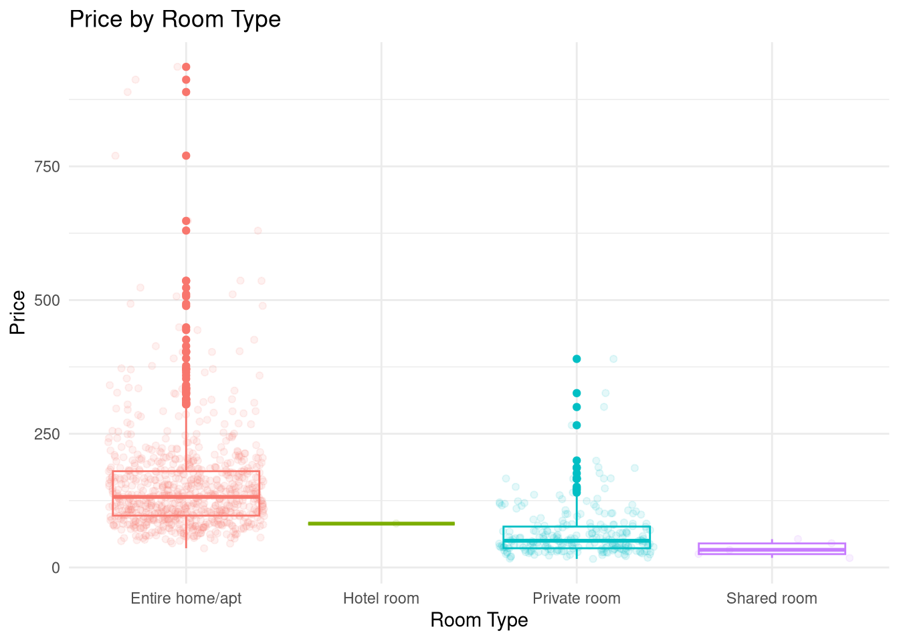
In general, entire apartments are more expensive than private rooms, most likely due to the privacy they provide. We can see as well that less clustering is present in the entire apartment class, with several outliers costing more than double or triple the average price. This variance is less pronounced in the private room category.
Let us explore a different variable now, such as the number of bathrooms. Is there any tendency in the price according to them? Answer can be seen in Figure 7.
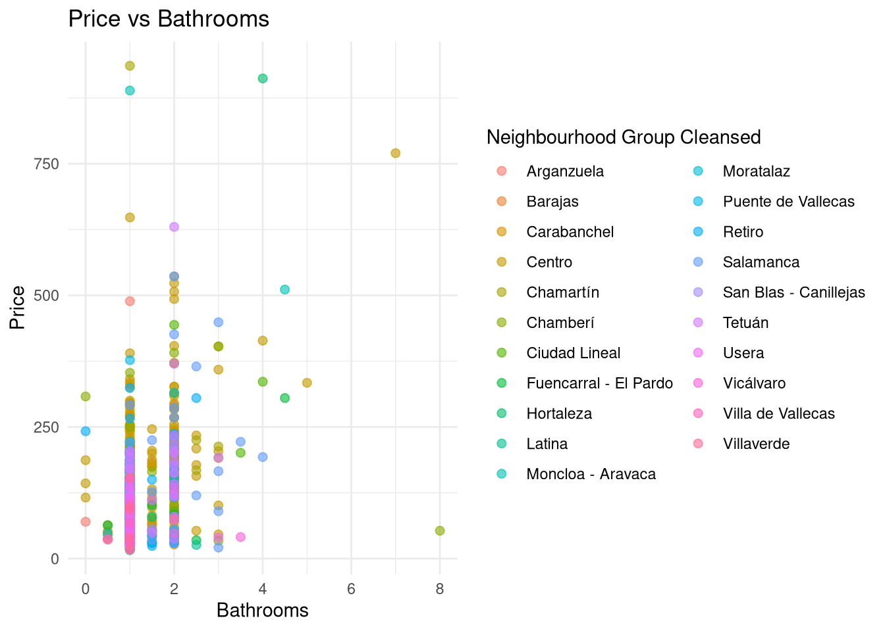
We can see that the data is clustered between 1.5 and 2.5 bathrooms, with no clear tendency. Perhaps it is worth taking a look to the distribution of bathrooms based on the number of accommodates of the listing. Take a look at Figure 8.
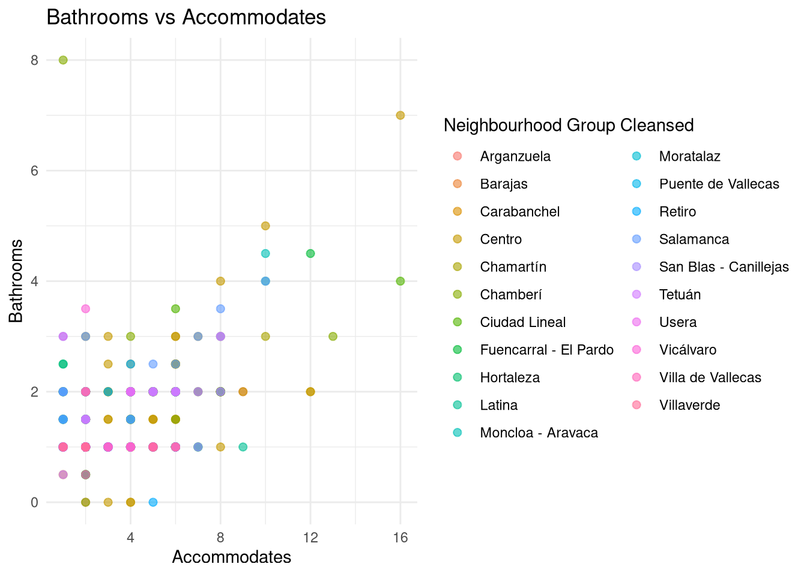
We can see that there is a trend, the number of bathrooms increases with the number of accommodates. Interestingly, we can see some unexpected outliers, such as one apartment in Chamberí with 8 bathrooms for a single accommodate. This is likely an error when inputting the data. We retained this outlier to demonstrate the robustness of PCA later, though we could as well choose to remove it.
For the sake of completion, we show in Figure 9 the distribution of the rest of the amenities.
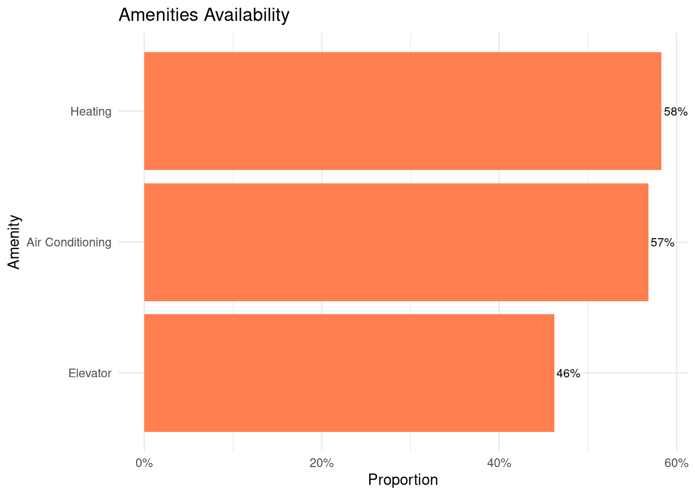
It is interesting to note that around 40% of the listings do not have a heating system, and 40% as well do not have air conditioning. As well, note than more than half of the listings do not posses an elevator. The high density of listings in the city center could be an explanation for this, since old buildings are less likely to have elevator.
The last plot of this section, Figure 10, shows a summary of what we have been presenting.

Correlation analysis
Let us take a look to a correlation matrix to see if there is any between the variables.
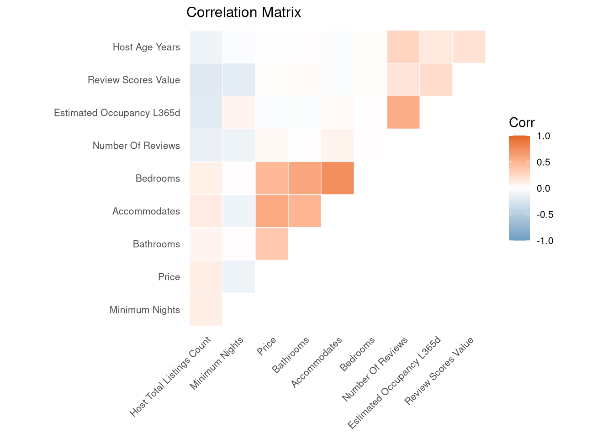
We can see in Figure 11 that the price, the number of bathrooms, and the accommodates are highly correlated (the last two we had already seen it in the previous section). We can see as well that the occupation per year rate is correlated to number of reviews, which is to be expected.
Lastly, we present in Figure 12 a detailed map of the occupation per neighborhood, as well as the average and median price for each of them.

Unfortunately, Figure 12 is not interactive in its PDF version, which makes the information not as visual as it could be. Nevertheless, we see that the most expensive district, is Moncloa, followed by Centro and then by Salamanca. However, in Moncloa the median is somewhat far from the mean, suggesting there might be some notable outliers that are inflating the average.
Principal Component Analysis
In the final part of our task, we compute a Principal Component Analysis (PCA) to our dataset. The main goal of the PCA is to reduce the dimensionality of our dataset while being able to maintain its core information.
PCA analysis
In Figure 13, we see a Cattell’s scree graph which represents the values of the eigenvalues in relation to their according dimensions, or component number, we select those eigenvalues which follow the Kaiser’s criterion which take those eigenvalues whose values are higher or equal than 1 when computing the covariance matrix.
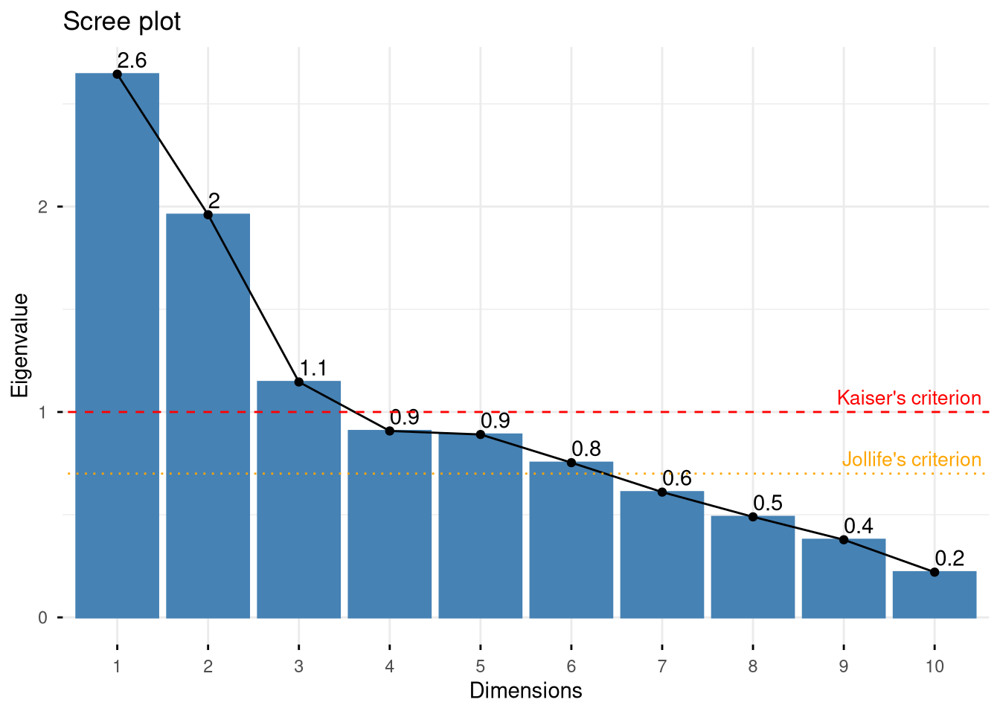
We also compute a graph regarding the percentage of explained variability of each component of the PCA. This is presented in Figure 14. We can observe that we select three components which account for 57.5% of variability.
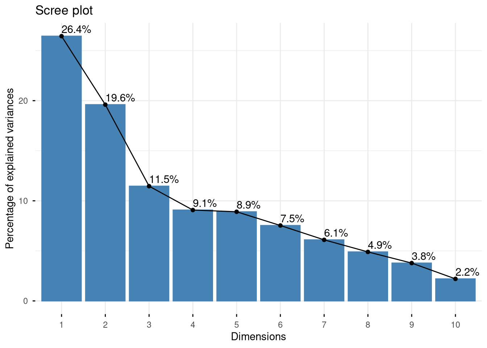
Correlation plots between PC’s and original variables
In this section we provide correlation plots between the three components with respect to the originals variables in our dataset.
Correlation plots between PC1 and PC2
Figure 15 corresponds to the correlation plot between PC1 and PC2 and original variables. We notice two groups of numeric variables that are positively highly correlated, one with PC1 and other with PC2, except two variables; the minimum nights and the host total listing counts.

Correlation plots between PC1 and PC3
Figure 16 corresponds to the correlation plot between PC1 and PC3 and original variables. We observe two groups of numeric variables that are positively highly correlated, one with PC1 and other with PC3, except the variable review scores value which has a little negative correlation with PC3.
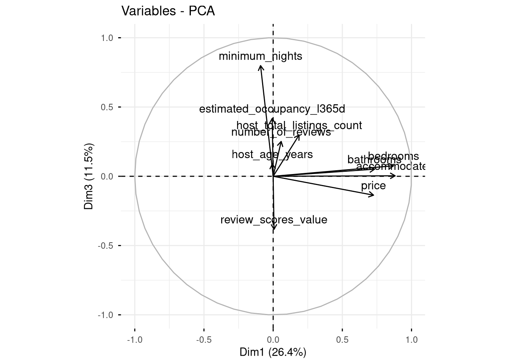
Correlation plots between PC2 and PC3.
Figure 17 corresponds to the correlation plot between PC2 and PC3 and original variables. We observe that, in this case, the correlation values of the numeric variables are more spread and only one variable which is minimum nights is highly correlated with PC3.
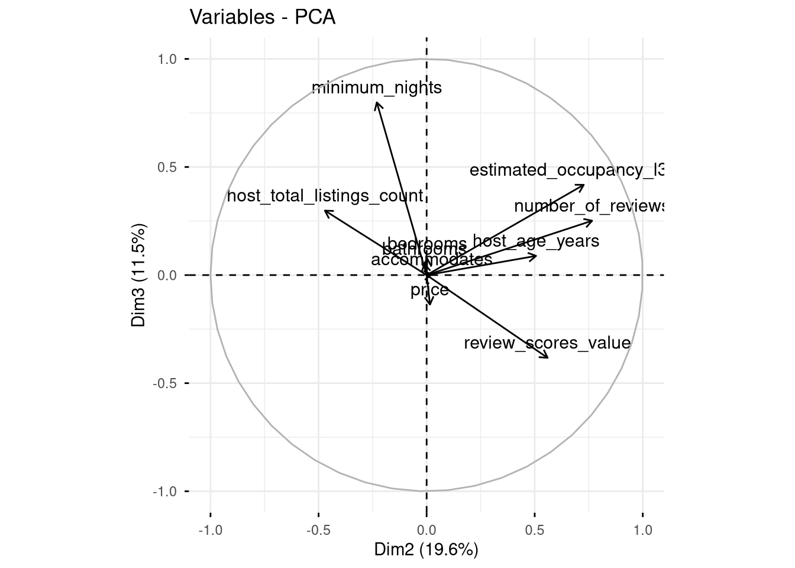
Contribution plots
Another way we have to observe how much each original numeric variable contributes to each one of our principal components and whether it contributes positively or negatively is the contribution plot.
Contribution plot PC1
In our first plot (Figure 18) we get to see how each original numeric variable contributes to the PC1. We observe that the ones that contribute the most are accommodates, bedrooms, bathrooms and price which makes sense because more people imply more bedrooms and bathrooms and bigger properties imply more price, so it makes sense that these variables are highly correlated between each other and are part of PC2.
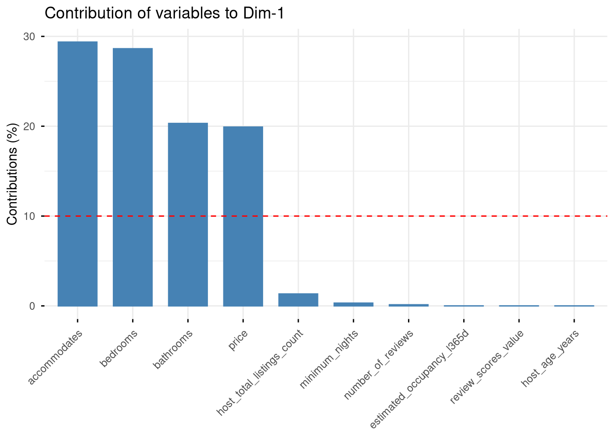
Contribution plot PC2
In our second (Figure 19) plot we get to see how each original numeric variable contributes to the PC2. The variables which contribute the most are the number of reviews, the estimated occupancy of each year, the review scores value, the age of the host and the total number of listings that the host has. The numbers of reviews is correlated with the review scores value, the scores values with the estimated occupancy and the age of the host with the total number of listings, so it makes sense that these variables are highly correlated with each other and are part of PC2.
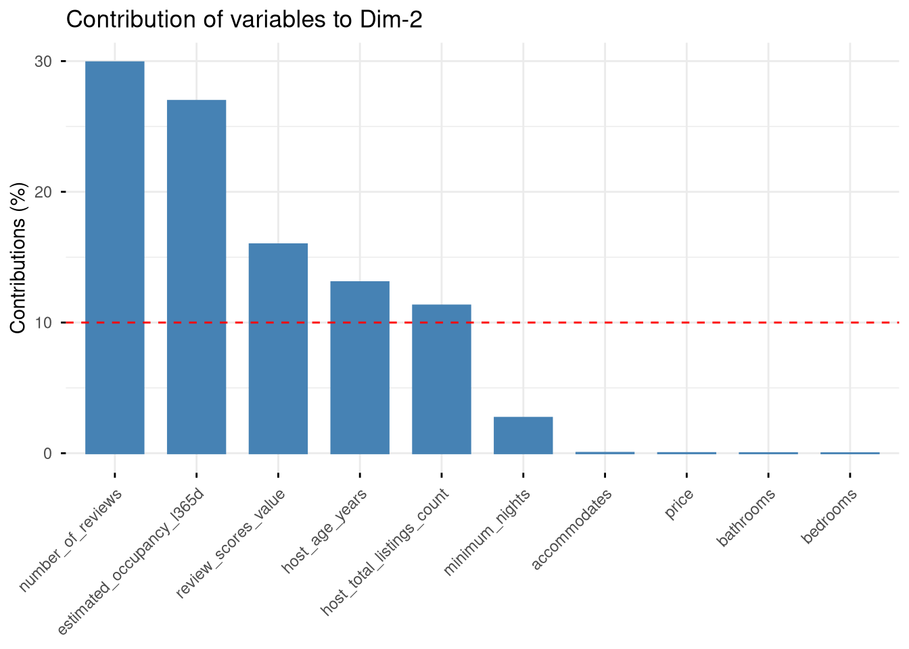
Contribution plot PC3
In our third plot (Figure 20) we get to see how each original numeric variable contributes to the PC3. There is one variable that contributes significantly more than any other is the minimum nights variables which contributes more than 50% of the PC3. Recall that in the correlation plot of the PC1 and PC3 and PC2 and PC3, we observed that these variable was the one that had the biggest correlation with PC3 so this makes sense.
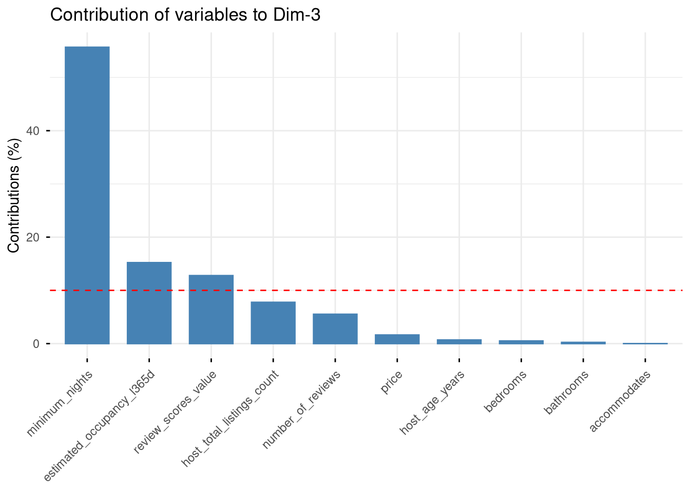
Correlation heatmap
Finally we plot a correlation heatmap which allows us to see the level of correlation of the original numeric variables with each one of the principal components. The results, which can be seen in Figure 21, justifies the previous contribution and correlation plots which we have explained before.
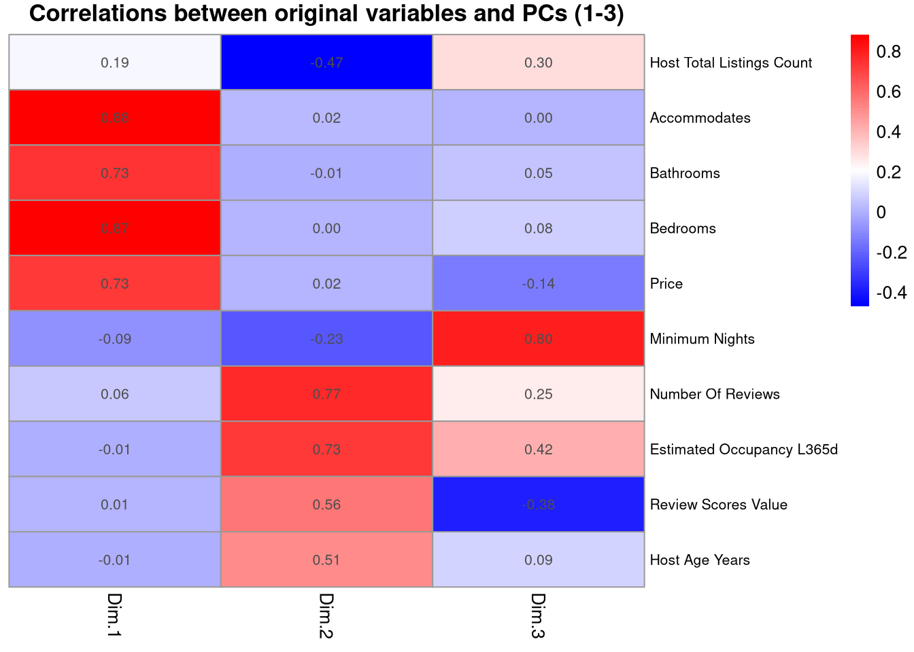
As an example of an individual plot (Figure 22), we have our PCA grouped by neighborhoods.
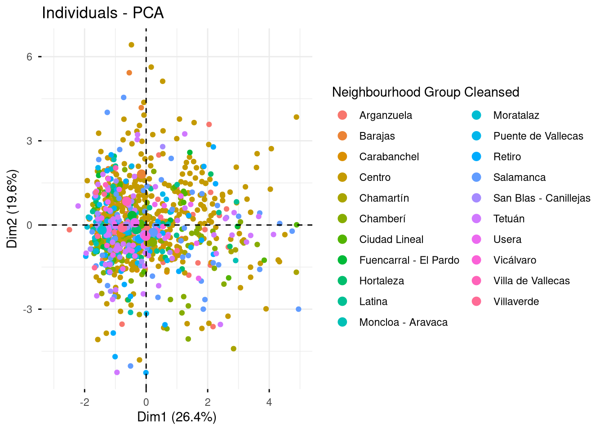
PCA stability analysis
In the final part of our project we compute a stability analysis for our PCA by bootstrap. The following graph corresponds to the stability analysis of our eigenvalues. Recall as we saw before that the only principal components which fulfilled Kaiser’s criterion were PC1, PC2 and PC3, in this graph we observe that the criterion is still fulfilled. Our three PCs show to be stable in Figure 23.

In the final part of our analysis we check the stability of our corresponding principal components. We can see that the original numerical variables exhibit a clear pattern with the principal component which is shown by the low variability and the directional agreement between the bootstrap estimates and the original loadings.
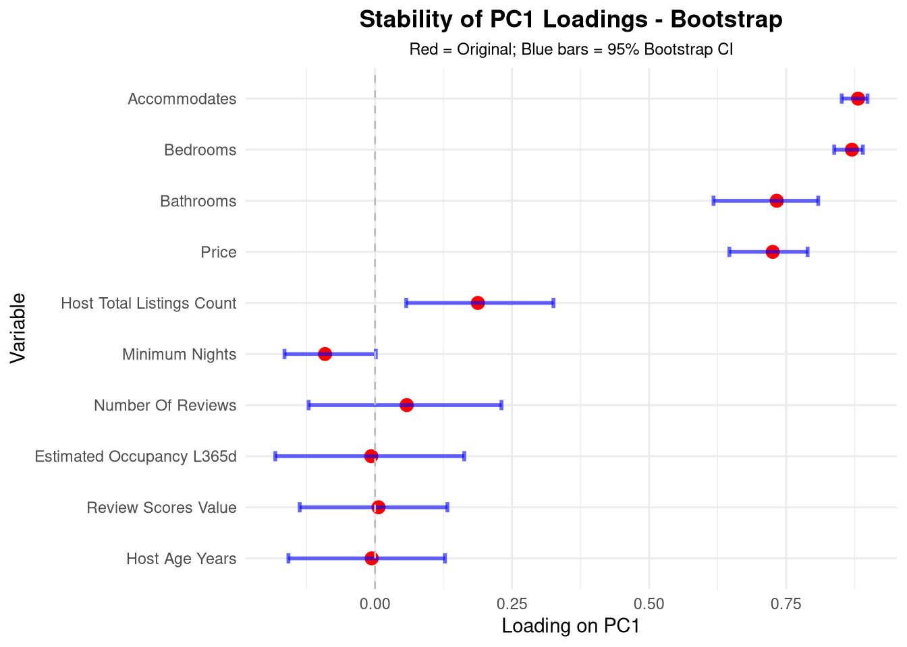
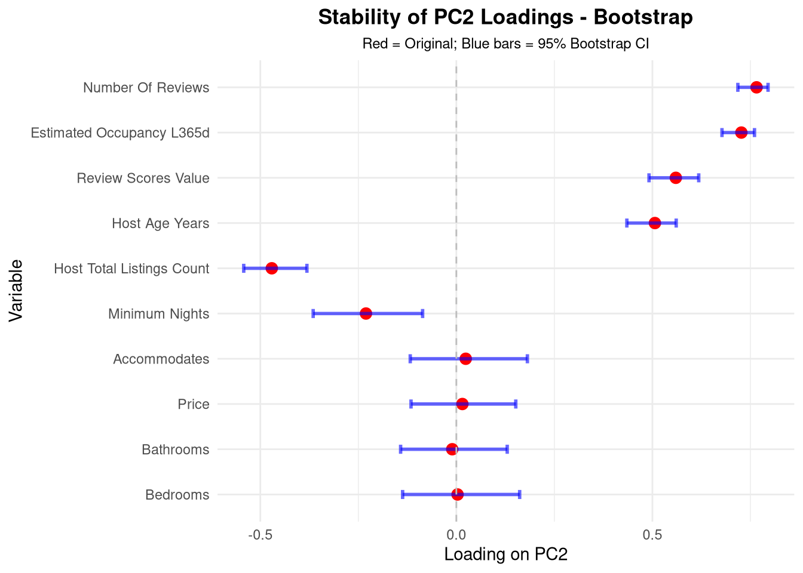
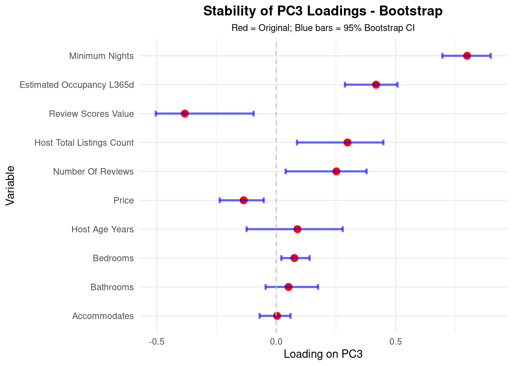